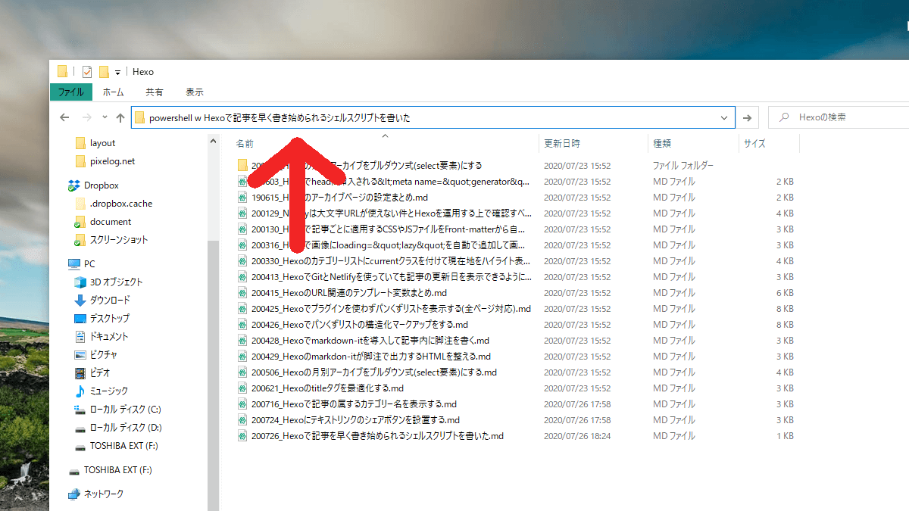

Hexoで記事を早く書き始められるPowershellのスクリプトを書いた
このブログは、URLにSEO効果があるというのはオカルトだと思っているのと、単純に英語のスラッグを考えるのがめんどくさいというのがあって、記事のパーマリンクを乱数にしています。
今までパーマリンクは、Bitwarden（パスワード管理ソフト）のCLIからパスワードを生成し、フロントマターにコピペしていました。いたのですが、さすがに面倒が過ぎるので、以下の記事から着想を得て、Powershellのスクリプトでの自動化に踏み切ることにしました。
気付いたらHexoのパーマリンクが変わっていたので自動生成＋固定にできるよう対応
Hexoでも記事を作成するコマンドは用意されていますが、他にもファイル名まわりなどで不満があるのでその辺りも解決します。
前提条件
当ブログの_postsフォルダは以下のようなルールで管理しています。
__posts/
├ 雑記/
│ └ 200419_SE215のリケーブルにはYinyooのYYX4849がおすすめ.md
├ Hexo/
│ └ 200726_Hexoで記事を早く書き始められるシェルスクリプトを書いた/
│ └ 200726_Hexoで記事を早く書き始められるシェルスクリプトを書いた.md
│ファイル名は、数字6ケタの日付を最初に補い、日付と記事名とをアンダースコアで区切っているのと、posts以下はカテゴリーで分類しています。
やりたいこと
---
title: {記事名}
date: {ファイル作成日時をセット}
categories:
- {カテゴリー名をディレクトリ構造から自動でセット}
tags:
permalink: {6ケタの乱数を自動でセット}
---- ファイル名を先述のルールに従ったもので生成する
titleに記事名を挿入categoriesをディレクトリ構造を参照してセットするpermalinkに乱数を自動でセットする- post asset folderがいらないときに、フォルダを削除するのが面倒なので、最初から選べるようにする
ソース
という訳で、下のようなスクリプトを書いてみました。。今までにシェルスクリプトを書いた経験がなく、Hello Worldから始めるような状態だったのでかなり苦労した…。
#!/bin/sh
# ファイル名に使う変数
$prefix = Get-Date -Format "yyMMdd"
$title = $Args[0]
$filename = "${prefix}_$title"
# FrontMatterにセットする変数
$date = Get-Date -Format "yyyy-MM-dd HH:mm:ss"
$path = Convert-Path .
$cat = $path -replace ".*_posts\\","" # _posts以下のフォルダをカテゴリーとして扱う
$ary_cat = $cat -split "\\"
$random= -Join (Get-Random -Count 6 -input 0,1,2,3,4,5,6,7,8,9,a,b,c,d,e,f,g,h,i,j,k,l,m,n,o,p,q,r,s,t,u,v,w,x,y,z)
# FrontMatterの準備
$frontMatter = "---
title: $title
date: $date
categories:"
for($i=0; $i -lt $ary_cat.Length; $i ++){
$frontMatter += "`n - " + $ary_cat[$i]
}
$frontMatter += "`n" + "tags:
permalink: $random
---"
# ファイル作成
New-Item "$filename.md"
Add-Content "$filename.md" -Value $frontMatter -Encoding Utf8
# フォルダ作成
If($Args[1]){
New-Item $filename -ItemType Directory
}
# ファイルを開く
Invoke-Item "$filename.md"上のコードを.ps1という拡張子で、パスの通ったフォルダに保存します。ファイル名がそのままコマンドになるので、短い名前がいいということで、w.ps1という名前にしました。
使い方
まず、記事を作成したいカテゴリーのフォルダを開きます。

そして、あのフォルダの階層とかパスとかが表示されてる窓（名前分からん）で、下の呪文を唱えます。
powershell w [記事名] [post asset folderを生成するかどうか]すると、下のようなフロントマターがあらかじめセットされた状態でMarkdownファイルが生成され、エディターが起動します。第2引数に適当な文字列（何でもいい）を指定すると、画像を入れるためのフォルダも同時に作成されます。
---
title: Hexoで記事を早く書き始められるシェルスクリプトを書いた
date: 2020-07-26 18:24:39
categories:
- Web
- Hexo
tags:
permalink: 4yx1we
---